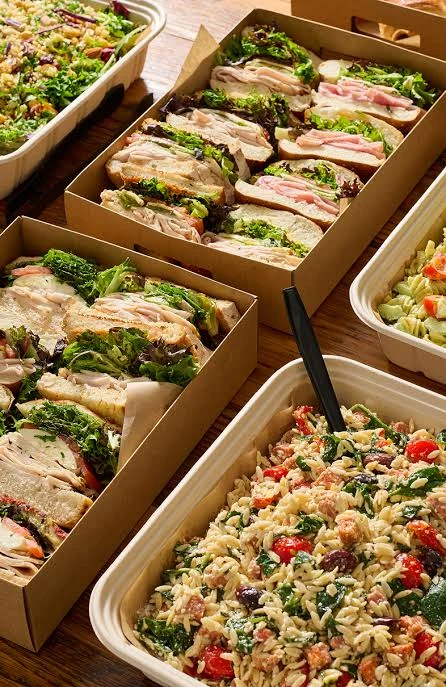

Office & meeting meals
Plan a lunch that suits your team’s schedule and space.
CATERING & DELIVERED MEALS
Delivered catering for offices, meetings, and crews. A practical way to bring people together, with the menu and delivery details considered in advance.
Plan your gatheringCONSIDERED FROM THE START
When delivery is the right fit, we help you think through the meal, portions, presentation, and access at your location. Any setup, service equipment, or staffing needs can be discussed separately and confirmed in your proposal.
DELIVERED MEALS & WORKING LUNCHES

A neatly arranged selection for a shared office lunch.

Another presentation for meetings and delivered meals.

A shared lunch presentation with sandwiches and accompanying salads.
Interested in individually boxed meals? Include that in your inquiry so packaging and contents can be confirmed. The photos above show shared sandwich trays and salads.
A CLEAR DELIVERY PLAN
A few practical details make delivered catering easier to receive and serve.
Confirm the full address, entrance, parking or loading instructions, and access restrictions.
Name someone who can receive the delivery and answer on-the-day questions.
Discuss table space, serving pieces, labels, dietary requirements, and any setup support.
A FEW HELPFUL DETAILS
Orders begin with an inquiry. Contact us to discuss the meal, delivery arrangements, and a proposal before confirming your booking.
These details are confirmed in your proposal. Include your location, guest count, and date so we can discuss the right fit.
Delivery and staffing are separate service needs. Tell us if you need setup or ongoing service so the scope can be confirmed.
SOUTHERN CRESCENT HOSPITALITY